46 Applications
3.16 Applications
Application 3.1. Implementing a “universal” analog filter using the PC sound board and Playrec. This application practices the system illustrated in Figure 3.7, using a PC to implement the system and the sound board for A/D and D/A conversions. It relies on a sound library to continuously read input samples from the ADC and send output samples to the DAC. There are many libraries for doing that, such as Java Sound, which has the advantage of a clean API and running on Windows, Linux and other operating systems. But a requirement for this example was to implement the signal processing in Matlab and Octave. Because of that, Playrec [url1pre] was adopted. The code based on Playrec is not optimized for this application because it continuously and dynamically allocates and frees memory. A more optimized implementation would use something as a circular buffer. But Playrec is flexible in the sense that allows using all Matlab/Octave powerful functions and can be compiled to both. In our case, the experiments were done using Playrec compiled for Octave on Linux. The reader is referred to Playrec’s web site at [url1pre] for installation instructions and it is assumed from now on that Playrec has been already installed and tested.
Listing 3.38 lists the first lines of the initialization code, where the sampling frequency is defined. Hence, the application bandwidth is . It should be mentioned that the values of the two first variables in Listing 3.38 may vary among different computers. The user must use Playrec’s scripts select_play and select_rec to investigate the proper identifiers (ID’s) in his/her system.
playDeviceID=10; %the device ID, choose it using select_play... recDeviceID=10; %the device ID, choose it using select_rec... playChan=1; %number of channels used for playback recChan=1; %number of channels used for recording 5Fs=44100; %sampling frequency debug=1; %use 1 to show the number of skipped samples or 0 otherwise %other definitions follow below: ...
Listing 3.39 provides an example of filtering using Playrec. Note that the first instruction is to run Listing 3.38 to initialize Playrec. Just after that, a Butterworth filter of order 30 is designed, with cutoff frequency
Hz, which corresponds to rad (or after normalizing by , as required by Matlab/Octave). The array memory is created in the next line, to store the samples in the filter’s memory. The actual filtering processing is in line 23, within an eternal loop, and repeatedly updates memory.%Example of LTI channel implemented as H(z)=B(z)/A(z), below ak_universalChannelInitialization %initialize sound card acquisition %(script above defines Fs and sound recording/playback parameters) [B,A]=butter(30,0.5); %design some filter to play the role of channel 5[ans, memory] = filter(B,A,zeros(1,100)); %initialize filter's memory while true %script runs until interrupted (by CTRL + C, for example) %-1 is to record the same number of samples in playSampleBuffer newPageNumber = playrec('playrec', playSampleBuffer, playChan,... -1, recChan); 10 pageNumList = [pageNumList newPageNumber]; %add to end of list if(runMaxSpeed) %consumes more CPU while(playrec('isFinished', pageNumList(1)) == 0) end else %less CPU-demanding 15 playrec('block', pageNumList(1)); %blocks until recording end recSamples = playrec('getRec', pageNumList(1)); %get rec. samples playrec('delPage', pageNumList(1)); %delete the current page pageNumList = pageNumList(2:end); %exclude page number from list 20 if (~isempty(recSamples)) %DSP code section %Your DSP code must go here, inside the 'if' instruction. The %recSamples and playSampleBuffer store the input and output %channel samples, respectively. [playSampleBuffer, memory] = filter(B,A,recSamples,memory); 25 end if debug == 1 %send to stdout (if outside the loop, it would not fprintf('%d samples skipped!\n', ... %print due to CTRL+C) playrec('getSkippedSampleCount')); end 30end playrec('delPage'); %clean exit, but not executed due to user CTRL+C
Expanding the setup in Application 1.4 to use two computers, with audio cables to connect the ADC and DAC of the first to the DAC and ADC of the second, respectively, it is possible to implement and test several DSP algorithms. For example, while one computer implements the analog filter based on , Audacity can be used to playback a file with a signal composed by the sum of two sinusoids to be the filter input, and simultaneously obtain the filter output .
Another example is suggested in Listing 3.40, which shows how to add random noise to the filter’s output.
if (~isempty(recSamples)) %DSP code section %Your DSP code must go here, inside the 'if' instruction. The %recSamples and playSampleBuffer store the input and output [playSampleBuffer, memory] = filter(B,A,recSamples,memory); 25 noiseSamples = randn(size(noiseSamples)); %new noise samples playSampleBuffer = playSampleBuffer + noiseSamples;%add noise end
Note that the variable debug in Listing 3.38 can be used to evaluate if the system is capable of not dropping samples (given the chosen and DSP processing).
Application 3.2. Implementing a “universal” analog filter using the PC sound board and Java code. This application discusses another implementation of a universal channel. Instead of the Playrec Matlab/Octave code adopted in Application 3.1, Java is used here. The advantage of using Playrec is that the channel can be based on virtually all Matlab/Octave available functions. However, in many cases the channel just needs to implement a filter. In this situation, the task of compiling Playrec can be avoided. The
portability of Java makes easier to run the filter using the provided code, which can have its source code modified to add noise, etc. Alternatively, the already compiled DigitalFilter.jar can be executed, which requires only having Java installed on your machine.The DigitalFilter Java project can be found at folder Code/Java_Language of the companion software. The code can be executed from a command prompt, going to folder Code/Java_Language/DigitalFilter/dist and typing
java -jar DigitalFilter.jar
which will open the GUI depicted in Figure 3.66. The assumed sampling frequency is kHz, which can be modified by editing the source code and recompiling.
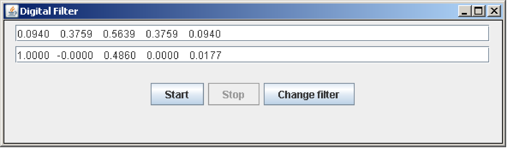
The GUI has two text areas to specify the numerator (top area) and denominator (bottom area) of a filter’s system function . The coefficients must be separated by a blank space. Figure 3.66 shows the coefficients of an IIR filter obtained with Matlab/Octave command [B,A]=butter(4,0.5). The difference equation is implemented using a Direct Form II Transposed, as the filter function in Matlab/Octave.
After clicking Change filter and then the Start button, the signal acquired by the sound board ADC will be continuously filtered by and the filter output sent to the sound board DAC, according to the scheme depicted in Figure 3.7.
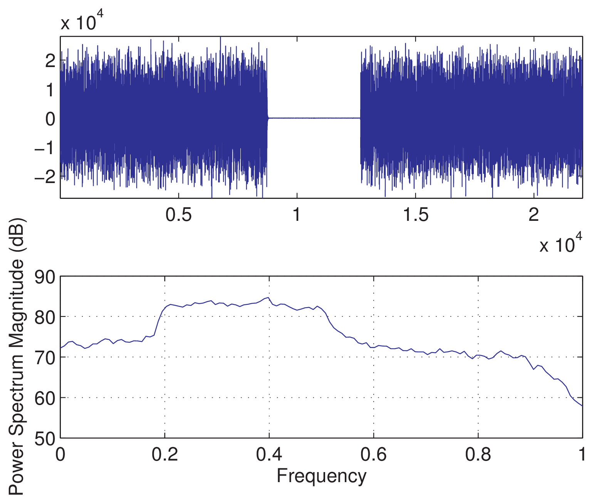
Figure 3.67 shows the plot obtained with the Matlab code of Listing 3.41 (a modified version of Listing 1.26). Two computers were used and two audio cables connected the ADC (mic in) of the first computer to the DAC (speaker out) of the second computer and vice-versa. The first computer executed the DigitalFilter Java code while the second executed Listing 3.41. The gains (volumes) of both computers were adjusted to avoid signal saturation. The filter that the Java code implemented was obtained with the command [B,A]=cheby1(4,1,[0.2 .5]) (the coefficients are not the ones in Figure 3.66), which corresponds to a bandpass filter.
Fs = 44100; %sampling rate, must be the same as Java code numSamples = Fs/2; %number of samples for DAC and ADC of soundboard while 1 %eternal loop, break it with CTRL+C outputSignal=randn(numSamples,1); %generate white Gaussian noise 5 wavplay(outputSignal, Fs, 'async'); %non-blocking playback inputSignal = wavrecord(numSamples, Fs, 'int16'); %record subplot(211), plot(inputSignal); axis tight %graph in time domain subplot(212), pwelch(double(inputSignal)); %in frequency domain drawnow %Force the graphics to update immediately inside the loop 10end
The shape of this bandpass filter can be observed in Figure 3.67 but the stopband attenuation is not as good as the theoretical one (obtained with freqz, for example). A caveat of the experiment can be observed from the top plot of Figure 3.67, which shows the signal acquired by the ADC of the second computer. The zero-valued samples in the middle of the noise signal are due to Matlab not being able to output WGN samples (Example 1.50 discusses WGN), record the input signal and performing the extra processing without this delay. A workaround is to use another software to output the WGN and use Matlab only to record the samples, process them and plot the results.
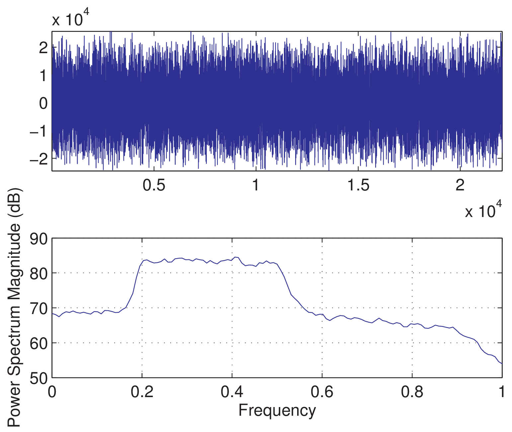
Figure 3.68 illustrates the result of a second experiment, where Audacity was used to send WGN samples to the DAC of the second computer. This can be conveniently done by using Audacity’s menu Generate and choosing Noise -> White. Then, the option Loop Play of menu Transport can be used to conveniently play the noise in an eternal loop. The second computer also executed Listing 3.41 but with its fourth and fifth lines commented out such that Matlab simply reads from the ADC and shows the plots. It can be seen that there are no silence gaps as occurred in Figure 3.67.
The user is invited to implement a system with larger attenuation in the stopband. One aspect is to use with larger order. Another aspect is to get a better estimate of the spectrum by changing the values of numSamples and input parameters of psd (or pwelch) in Listing 3.41. For example, it may help to increase the number of FFT points as discussed in Chapter 4.
Application 3.3. Relating power in continuous and discrete-time when the reconstruction filter has unitary energy.
In Section 1.11, a ZOH reconstruction was assumed. Alternatively, if the reconstruction filter has an impulse response with unitary energy, a reasoning similar to the one adopted in Section 1.11 leads to the conclusion that the power is . Because of this, some textbooks denote as the average energy (Joules) instead of power (Watts). This ambiguity can also be interpreted as a consequence of the fact that a discrete-time signal does not have explicit information about time. Hence, the interpretation of its power in Watts requires a model or assumption for the reconstruction filter , which must incorporate the whole reconstruction process, including filters and amplifiers. In this text the assumed model is zero-order hold reconstruction.
Application 3.4. Minimum phase systems. A LTI discrete-time system is causal and stable only if all its poles are inside the unit circle, but these two requirements do not impose restrictions on the zeros. The zeros of a causal and stable can be anywhere in the Z plane. In many cases, it is useful to impose that the zeros must also be inside the unit circle. For a continuous-time system , the equivalent requirement is to have all zeros inside the left-part of the S plane. A minimum-phase system has this property.
A LTI is minimum-phase if both the system
itself and its inverse are causal and stable. Assuming, discrete-time, because the poles of the inverse are the zeros of , only a system with all zeros inside the unit circle has a causal and stable inverse.A non-minimum-phase system can always be transformed into a minimum-phase that has the same magnitude, i. e., . This is achieved by replacing the zeros of that are outside the unit circle by their conjugate reciprocals.35 That is, replace all zeros with by . For example, if is a zero of , it should be replaced by . The function ak_forceStableMinimumPhase.m implements this method and also decreases the magnitude of zeros on top of the unit circle.
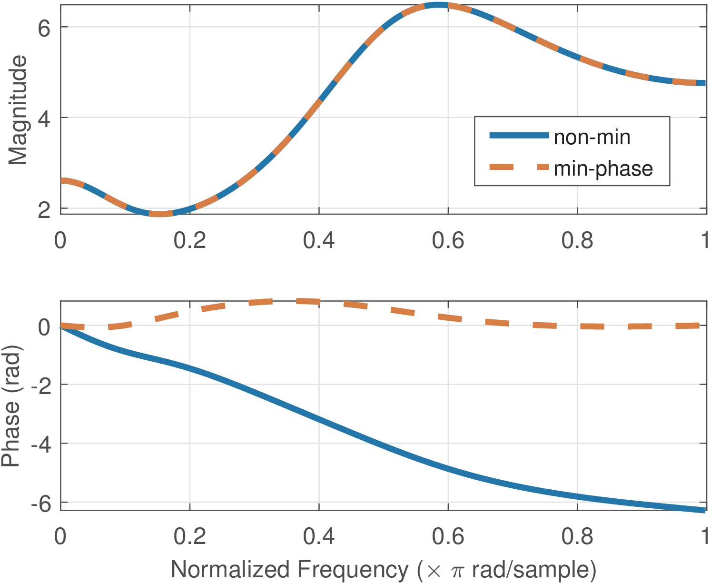
clf B_roots = [2*exp(j*pi/4) 2*exp(-j*pi/4) ... %define roots 0.7*exp(j*pi/8) 0.7*exp(-j*pi/8)]; B=poly(B_roots) %construct B(z) of H(z)=B(z)/A(z) 5A=poly([0.4 0.5 0.6 0.5j -0.5j 0.3j -0.3j]); %arbitrary Bmin = ak_forceStableMinimumPhase(B) %move zeros inside [H,w]=freqz(B,A); %frequency response for original H(z) [Hmin,w]=freqz(Bmin,A); w=w/pi; %for minimum phase H(z) subplot(211), plot(w,abs(H),w,abs(Hmin),'--'), axis tight 10legend1 = legend('non-min','min-phase'), subplot(212)
Figure 3.69 was obtained with Listing 3.42. Note that the magnitude is the same but the phase is distinct, with having smaller values.
Minimum-phase systems have interesting properties. As the name indicates, among all systems with a given magnitude, the minimum-phase is the one with the phase closest to zero. Figure 3.69 illustrates this behavior, which can also be observed via the group delay, as in Figure 3.70.
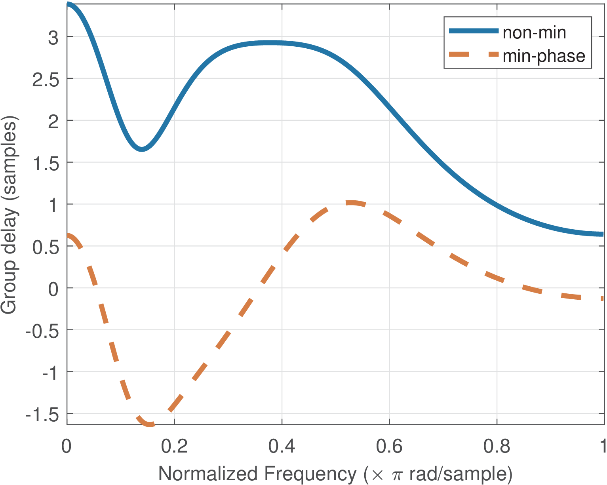
Besides, the impulse response of a minimum-phase system has its energy concentrated toward time more than any other causal signal having the same magnitude spectrum.
Application 3.5. Distinct ways of specifying the passband “ripple” / deviation. There are several ways of specifying the maximum “ripple” or deviation at the passband of a filter. For example, it can be specified in dB or linear scale, which are called here and , respectively (as suggested by Matlab). If one assumes a lowpass filter with a unitary gain at DC, the maximum linear deviation can be assumed to be within or . The latter option is particularly useful if the filter magnitude monotonically decreases as for the Butterworth filters and is assumed here, meaning that the frequency response is 1 at DC and decreases in the passband to a value not smaller than . For example, a specification can be that the passband magnitude does not deviate 5% of the gain at DC. In this case, and the minimum magnitude at passband is . Often, this value is specified in dB as
If the deviation is within in linear scale, then it is confined to in dB.
At the stopband, the magnitude in linear scale is also a “deviation” because the reference value is 0 (the desired magnitude at stopband). In other words, for the stopband, the deviation coincides with the magnitude itself and its value in
dB is given byOften, the filter magnitude has a maximum value of 0 dB and the values of and are positive.
Matlab uses the same convention adopted here in its routines. This is exemplified in Listing 3.43, which designs an IIR Butterworth.
Wp=0.3; %normalized passband frequency (rad / pi) Ws=0.7; %normalized stopband frequency (rad / pi) Rp=1; %maximum passband ripple in dB Rs=40; %minimum stopband attenuation in dB 5[n,Wn] = buttord(Wp,Ws,Rp,Rs); %find the Butterworth order [B,A]=butter(3*n,Wn); %design the Butterworth filter zp=exp(j*pi*Wp); zs=exp(j*pi*Ws); %Z values at Wp and Ws linearMagWp = abs(polyval(B,zp)/polyval(A,zp)) %mag. at Wp linearMagWs = abs(polyval(B,zs)/polyval(A,zs)) %mag. at Ws 10D_p = 1-linearMagWp %linear deviation at Wp (linear) R_p = -20*log10(1-D_p) %deviation (ripple) at Wp (dB) D_s = linearMagWs %linear deviation at Ws (linear) R_s = -20*log10(D_s) %deviation (ripple) at Ws (dB)
The filter has order n=4, D_p=0.0044, R_p=0.0380, D_s=1.0e-006 and R_s=119.9987. Note that the requirements are met with slack. As a sanity check, adding the line
[n2,Wn2] = buttord(Wp,Ws,0.0380,119.9987); %find Butterworth order
at the end of the previous code would give the same order n2=n=4 and cutoff frequency Wn2=Wn as the previous invocation to buttord.
Application 3.6. Influence of the poles quality factor on frequency response. The goal here is to illustrate how the pole Q-factor influences a frequency response.
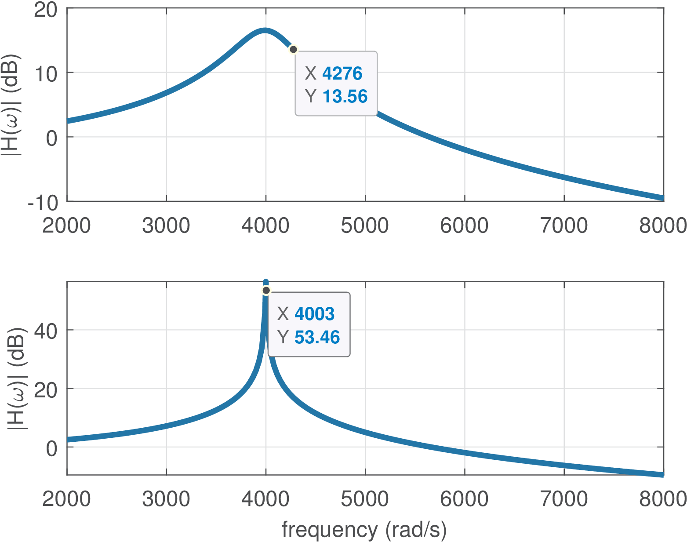
First, Listing 3.44 shows how to calculate for a second-order system in Matlab/Octave using Eq. (3.40).
p1=-300+j*4000; p2=-300-j*4000; %pole and its conjugate A=poly([p1 p2]); %convert it to a polynomial A(s) omega_n = sqrt(A(3)); alpha = A(2)/2; %use definitions Q = omega_n / (2*alpha) %calculate Q-factor
In this case, the poles are located at the frequency rad/s and have . For this example, the 3-dB bandwidth is defined (approximately) by and rad/s, which gives Hz. If we change the poles to , the -factor increases to and decreases to approximately 6 Hz. Figure 3.71 compares these two situations.
The approximations used in analog filter design differ in the strategy for locating the poles (and zeros). Typically, the approximations that use poles with larger -factor have better magnitude but worse phase responses. The Listing 3.45 compares the poles and their values for the Butterworth, Chebyshev (type 1) and Cauer (or elliptic).
function ak_showQfactors N=6; %order of filter Wc=100; %cutoff frequency disp('- Butterworth filter:'); 5[z,p,k]=butter(N,Wc,'s'); %design Butterworth calculateQfactors(p) %calculate and display Q-factors disp('- Chebyshev 1 filter:'); Rp=1; %maximum ripple at passband [z,p,k]=cheby1(N,Rp,Wc,'s'); %design Chebyshev type 1 10calculateQfactors(p) %calculate and display Q-factors disp('- Elliptic filter:'); Rs=30; %minimum attenuation at stopband Wp=Wc; %elliptic natural frequency equals cutoff frequency [z,p,k]=ellip(N,Rp,Rs,Wp,'s'); %design Elliptic filter 15calculateQfactors(p) %calculate and display Q-factors end % end function ak_showQfactors function calculateQfactors(p) %p has the poles p=p(find(imag(p)>0)); %exclude real poles and complex conjugates N=length(p); %number of complex poles with non-zero imaginary parts 20for i=1:2:N pole = p(i); Q = abs(pole) / (2*(-real(pole))); disp(['Poles=' num2str(real(pole)) ' +/- j' ... num2str(imag(pole)) ' => Q=' num2str(Q)]); 25end %end for end %end function calculateQfactors
The output of Listing 3.45 is the following:
- Butterworth filter: Poles=-96.5926 +/- j25.8819 => Q=0.51764 Poles=-70.7107 +/- j70.7107 => Q=0.70711 Poles=-25.8819 +/- j96.5926 => Q=1.9319 - Chebyshev 1 filter: Poles=-23.2063 +/- j26.6184 => Q=0.76087 Poles=-16.9882 +/- j72.7227 => Q=2.198 Poles=-6.2181 +/- j99.3411 => Q=8.0037 - Elliptic filter: Poles=-34.9934 +/- j49.0885 => Q=0.86137 Poles=-9.154 +/- j92.2792 => Q=5.0651 Poles=-1.3808 +/- j100.0259 => Q=36.2244
These results indicate that elliptic filters are more aggressive with respect to pole positioning (the poles are closer to the axis) and have sharper magnitude responses. Butterworth filters, on the other hand, have poles with lower than Chebyshev and elliptic filters.
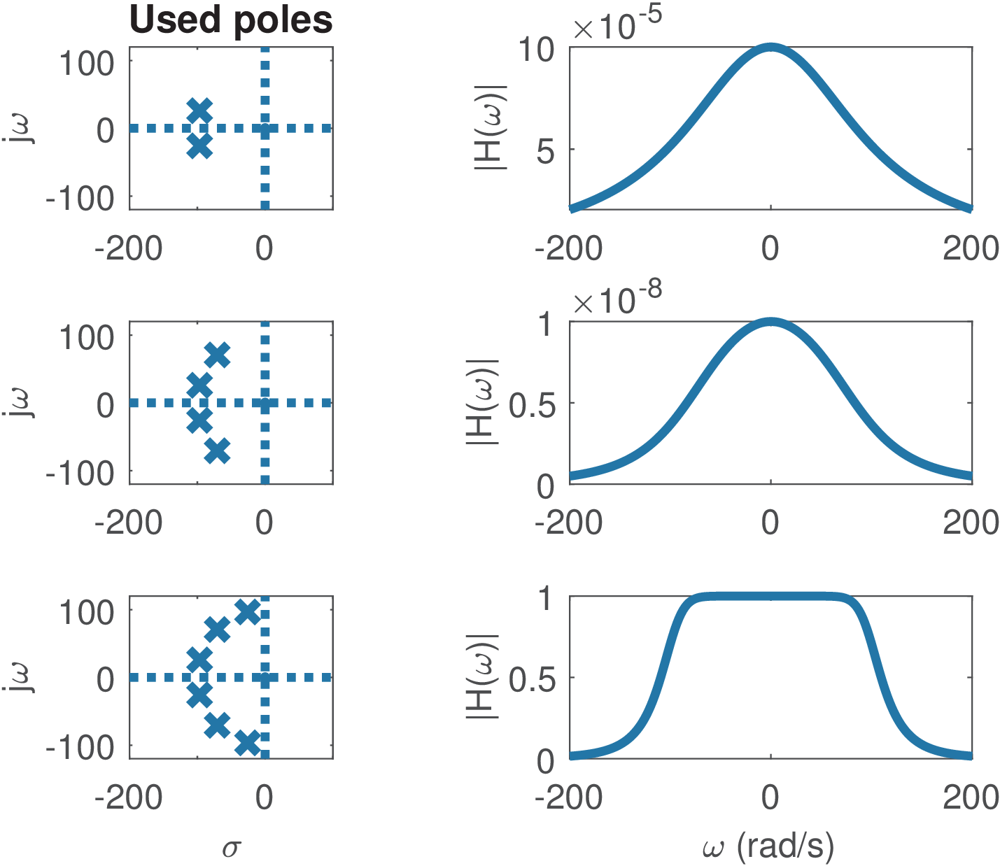
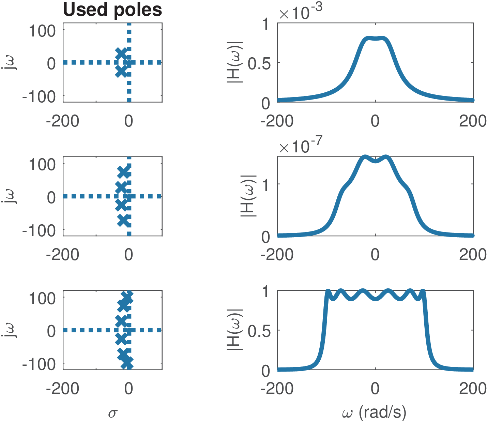
Figure 3.72 and Figure 3.73 compare the Butterworth and Chebyshev approximations using sixth-order filters. Both lead to all-poles transfer functions, because there are no finite zeros (all zeros are at ). Finite zeros offer an additional degree of freedom but typically create additional abrupt changes in phase.
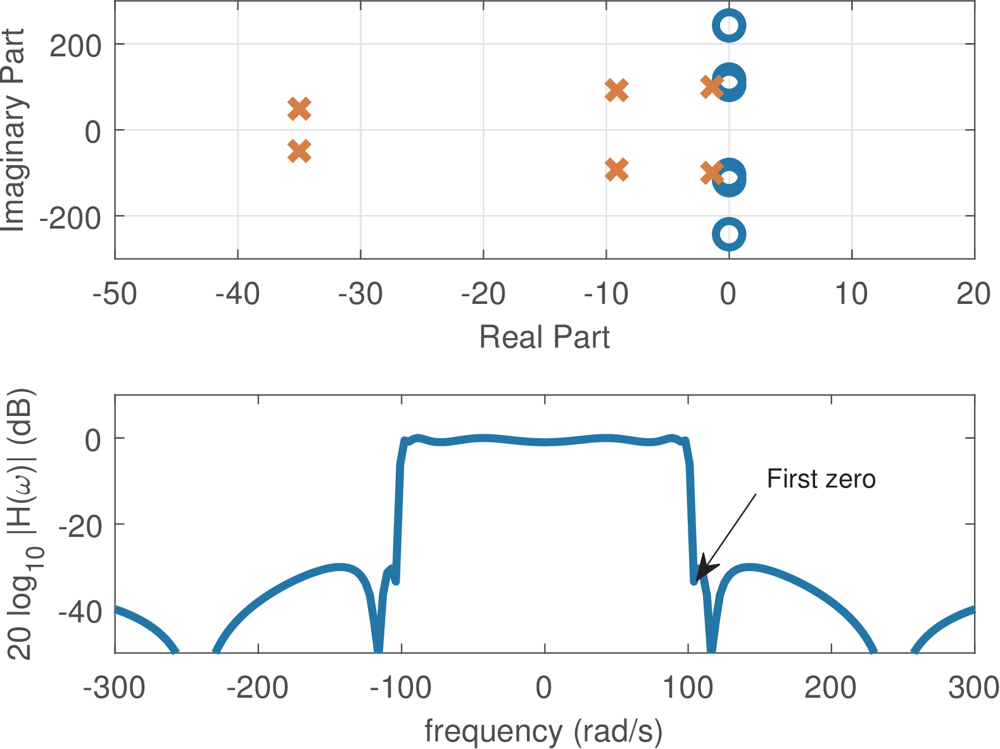
The elliptic filters use finite zeros and achieve very short transition regions. Figure 3.74 illustrates a sixth-order elliptic filter to be compared to Figure 3.72 and Figure 3.73 (their bottom-most plots).
Application 3.7. Estimating the frequency response of a sound board using a cable. The idea here is to estimate an impulse response and then obtain a frequency response , continuing the tests conducted in Application 1.4 (the same topic in be further discussed in Application 4.5).
Note that shifting a signal in time does not alter the magnitude of the spectrum. But choosing the “time origin” is important for the spectrum phase. For the specific signal described in Application 1.4, the first task is then to isolate one of the four “impulses” (recall they are just gross approximations to ). Here it is chosen the segment that starts at sample , which is when the second impulse is positioned.
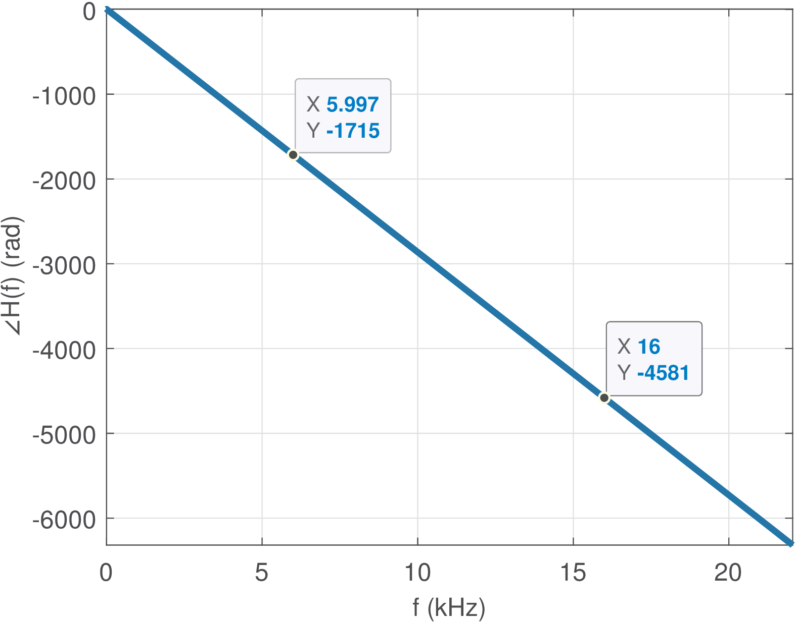
Listing 3.46 estimates the phase from the estimated considering the response to the second impulse at .
[h,Fs,b]=readwav('impulseResponses.wav'); nstart=11026; %when second \delta[n] occurs in impulses.wav nend=22050; %segment ends before the third \delta[n] in impulses.wav h=double(h(nstart:nend)); %segment and cast h to double 5N=length(h)-1; %it's convenient to make N an even number to use N/2 H=fft(h,N); %calculate FFT p = unwrap(angle(H(1:N/2+1))); %unwrap the phase for positive freqs. f=Fs/N*(0:N/2)/1000; %create abscissa in kHz. Fs/N is the bin width handler=plot(f,p); xlabel('f (kHz)'),ylabel('\angle{H(f)} (rad)') 10k1=1500; k2=4000; makedatatip(handler,[k1,k2]); %choose any 2 points %Calculate derivative as the slope. Convert from kHz to rad/s first: groupDelayInSeconds = -atan2(p(k2)-p(k1),2*pi*1000*(f(k2)-f(k1)))
Figure 3.75 shows the obtained phase. Because the phase is linear, the group delay can be estimated as suggested in Listing 3.28, by choosing two points and calculating the line slope in line 12. In this case the result was 45.573 ms, which is consistent with the estimate conducted in time-domain in Application 1.4.
Application 3.8. Interpreting the impulse response for line topology identification in DSL. In DSL, loop qualification consists in determining if a given line under analysis is able to support the desired DSL service. Identifying the topology of a given telephone line means identifying its line sections and is helpful for the loop qualification. These sections can be serial sections or bridge taps. Roughly speaking, a bridge tap is a derivation that is not terminated and causes unwanted signal reflections (echoes). Both types of sections have essentially two attributes: the length of the section and the type of cable used, which here is assumed to be entirely described by the gauge (or equivalently, the diameter) of the conductors. Therefore, the topology of a line under analysis can be considered as a set , where the subset , with , represents the -th line section from a port at the central office to the port at the costumer premises equipment, and is the number of sections that composes the subscriber line. Each subset is composed by the parameters where , , and are, respectively, the type of section, its length, and the cable gauge.
For many practical lines, the impulse response is composed by a series of positive (or upward) pulses delayed in time. Each succeeding pulse is generated by the part of the signal transmitted through the line discontinuities and multi-reflections suffered by the input
signal. Each “path” taken by the input signal into the line defines a pulse in the output.The following discussion will suggest how the impulse response can be interpreted. Figure 3.76(a) (top) depicts an example of a topology with six line sections and two bridge taps in the third and fifth line section, respectively. Figure 3.76(a) (bottom) also shows the first four (strongest) possible paths that the input signal can follow, from port 1 to port 2. Figure 3.76(b) shows the corresponding (simulated) impulse response of the line topology depicted in Figure 3.76(a). The relation between the signal paths and the pulses in the can be observed from the arrival times of the positive pulses, to .
|
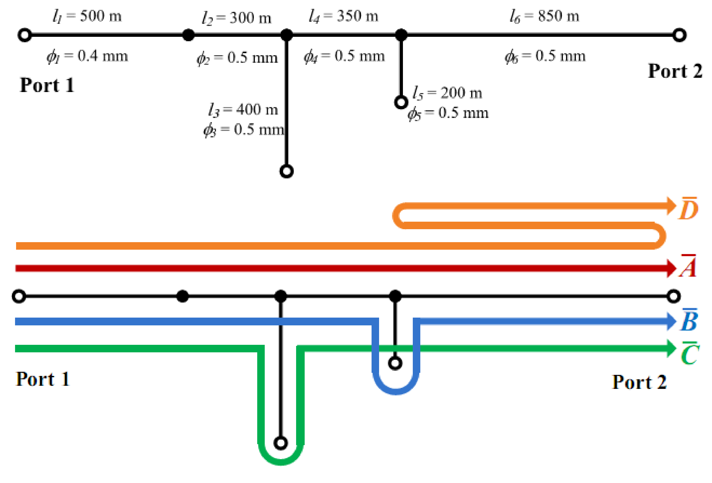
(a)
|
|
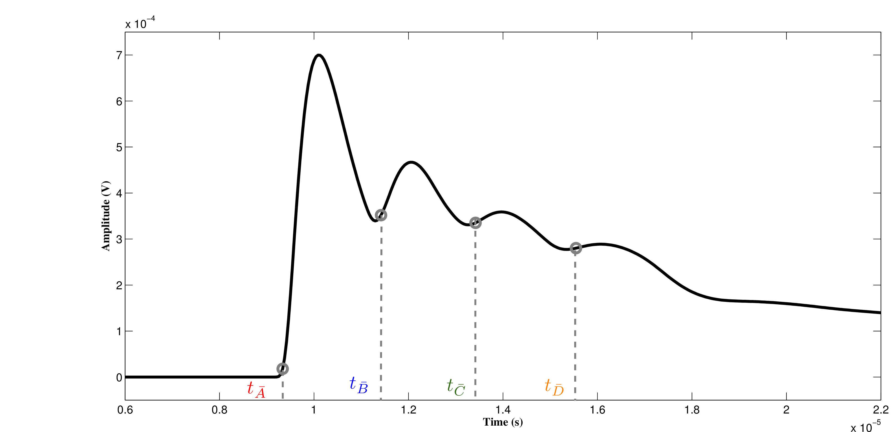
(b)
|
For example, the length of path A can be estimated by processing to extract the time of arrival of the first pulse. Having the time, the path length is obtained by considering that the signal propagates at velocity , where m/s is the speed of light in vacuum. For example, assume the total serial length m of the line is not known and must be automatically estimated by the DSL service provider. Assume an estimate of was available and s is obtained by signal processing (in our case, by inspection of Figure 3.76(b)). Hence, the estimate for the total length is m. The length of the bridge taps can also be estimated along this line of reasoning, assuming has already been estimated.
The presence of each bridge tap originates a new path and, as a consequence, a new pulse in the impulse response. In the example, the corresponding paths are B and C, which correspond to the arrival times e ) of the second and third pulses, respectively. Given that the shortest bridge tap (the fifth section) has length , the total length traveled by its corresponding pulse can be written as . Thus, the length of the first bridge tap can be estimated by . Use the same reasoning to estimate the length of the longest bridge tap (third section).
Topology identification is an involved problem. For example, the path D is caused by multiple reflections, which can cause several problems. And the presented analysis has restrictions. For example, it is not possible to determine the position of bridge taps from the impulse response. If the position of the bridge taps in Figure 3.76(a) change, the path traveled by the signal remains the same and, consequently, its signature on does not change.
Application 3.9. Understanding and compensating the delay imposed by a system. All practical systems impose some delay or distortion to signals. For example, in communication systems the channel is typically frequency-selective, meaning that distinct frequency components of the signal get attenuated and delayed in a way that the output signal is a distorted version of the input signal. Besides this effect, systems impose a delay (the output is observed only after an interval of time from the instant the input was generated, as studied in Application 1.5) that is often characterized by its group-delay.
Better understanding how to predict this delay when the system is LTI is the subject of the following discussion.|
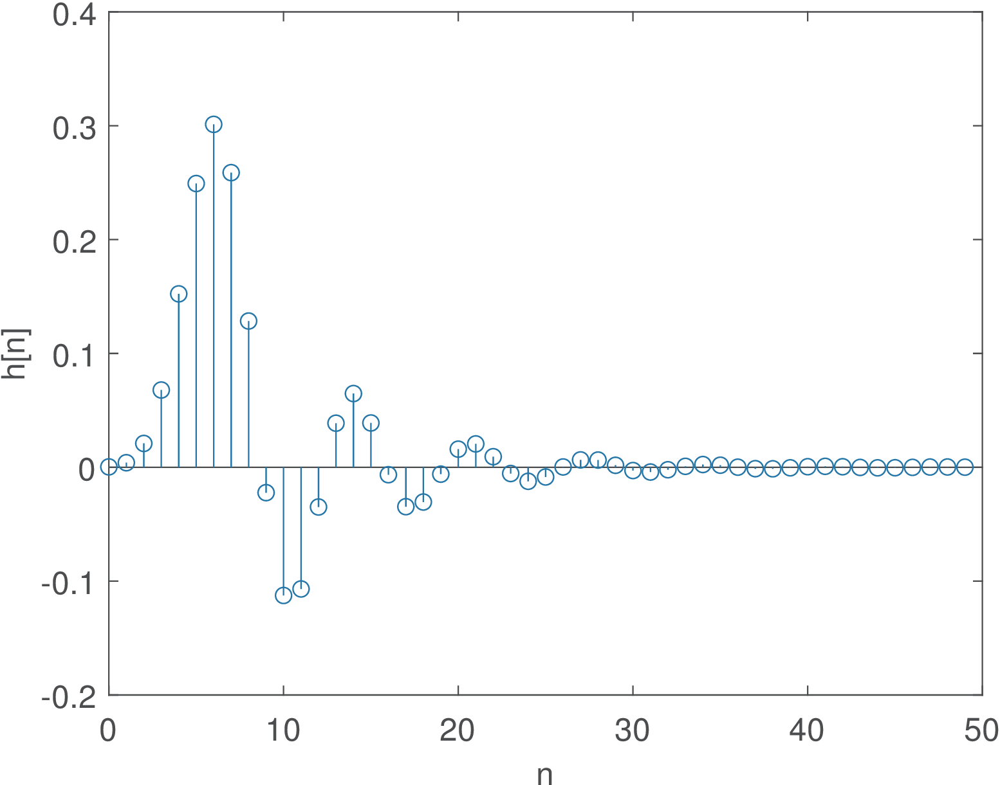
(a) Impulse response
|
|
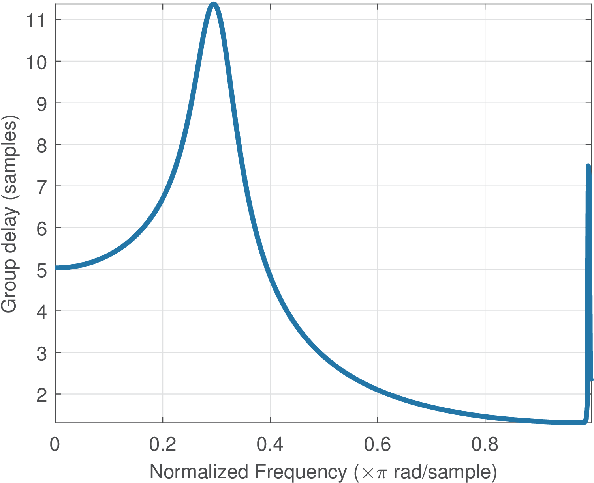
(b) Group delay
|
An example of filtering is provided in the sequel using an 8-th order IIR filter obtained and analyzed with Listing 3.47.
[B,A]=butter(8,0.3); %IIR filter h=impz(B,A,50); %obtain h[n], truncated in 50 samples grpdelay(B,A); %plots the group delay of the filter x=[1:20,20:-1:1]; %input signal to be filtered, in Volts 5X=fft(x)/length(x); %FFT of x, to be read in Volts y=conv(x,h); %convolution y=x*h
The truncated impulse response of this filter is depicted in Figure 3.77(a) and the group delay in Figure 3.77(b). An input signal x with a triangular shape was generated and is depicted in Figure 3.78 together with its FFT.
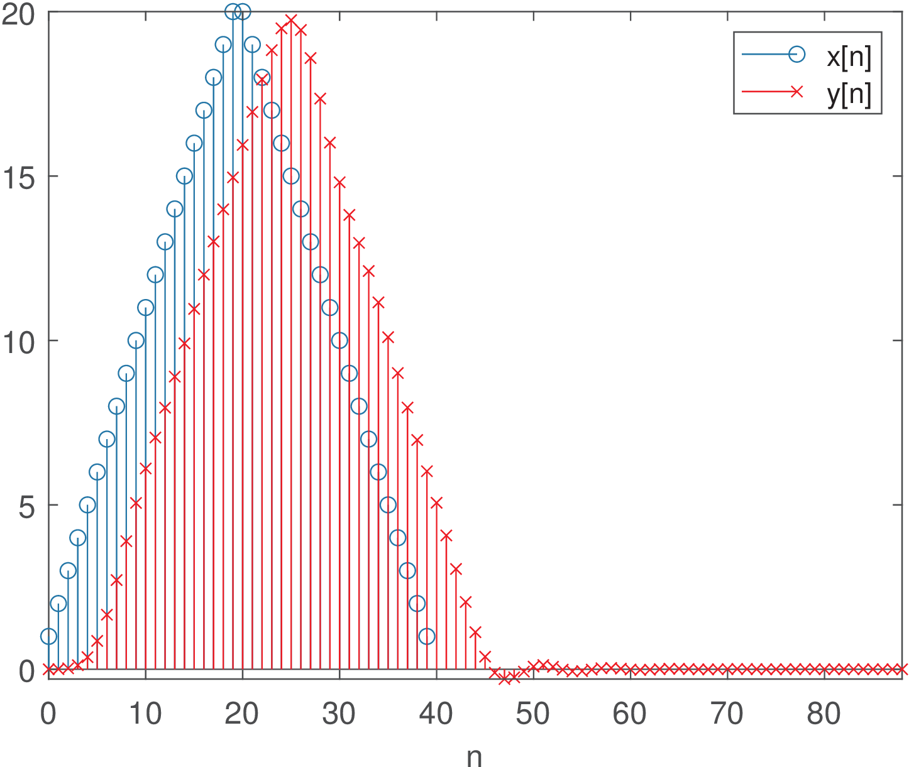
The result of the convolution y=conv(x,h) is shown in Figure 3.79. The input has peaks at and , such that x[19]=x[20]=20, while the output peaked at with y[25]=19.7. This delay of 5 samples could be inferred by observing that the peak of h in Figure 3.77(a) is located at sample . A more accurate analysis can be done via the filter’s group delay. In the case of a linear-phase FIR, the group delay is constant (the same number of samples) in the whole passband. But the current IIR has a frequency dependent group delay and the spectrum of the input signal needs to be analyzed via Figure 3.78.
Note that most of the input signal power is concentrated at DC and the FFT coefficient for , which corresponds to an angle rad, given that length(x)=40 is the FFT length. From Figure 3.77(b) or directly calculating gd=grpdelay(B,A,[0 0.1571]), it can be observed that the group delay of the filter for components at and is and samples, respectively. When using Figure 3.77(b), note that should be normalized and the value read at . The group delay at the frequencies of interest is approximately 5 samples, which explains the delay imposed by the filter in Figure 3.79.
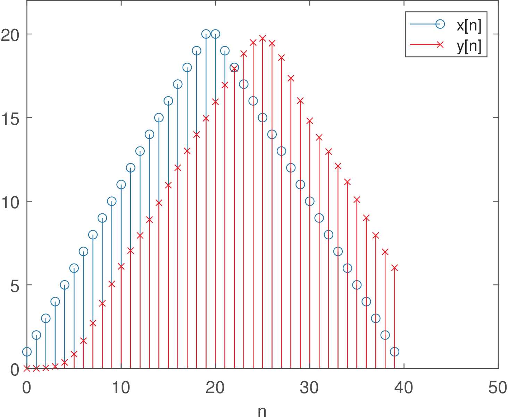
Instead of using convolution, the output was obtained with y=filter(B,A,x). In this case, the vector y is the one depicted in Figure 3.80, which should be compared to Figure 3.79. Because and samples, the convolution in Figure 3.79 led to samples. In contrast, Figure 3.80 shows that filter makes sure that samples. To visualize the tail of the convolution, one should add zero samples to the end of x. For example, the extra 20 samples in y=filter(B,A,[x zeros(1,20)]) are enough to visualize the “triangle” in y.
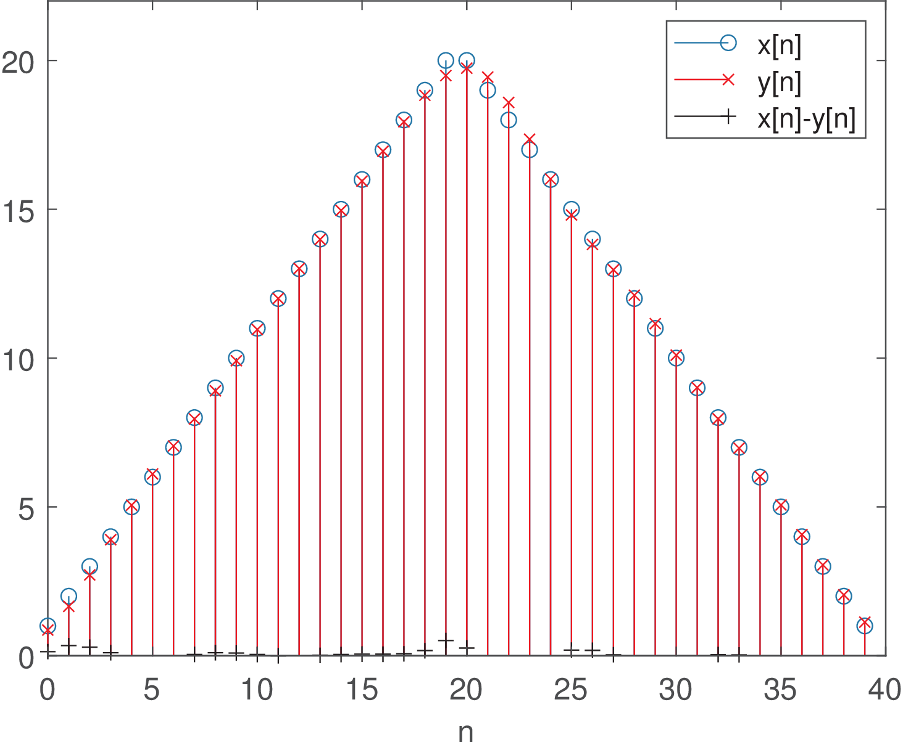
In some situations it is necessary to compare the error between the input and filtered output signals. But this requires compensating the filter delay and eliminating the convolution tail. Figure 3.81 was obtained with:
x=[1:20,20:-1:1]; %input signal to be filtered, in Volts [B,A]=butter(8,0.3); %IIR filter h=impz(B,A,50); %truncate h[n] using 50 samples y=conv(x,h); %convolution y=x*h 5x=x(:); y=y(:); %force both x and y to be column vectors meanGroupDelay=5 %estimated "best" filter delay y(1:meanGroupDelay)=[]; %compensate the filter delay y(length(x)+1:end)=[]; %eliminate convolution tail mse=mean( (x-y).^2 ) %calculate the mean squared error 10SNR=10*log10(mean(x.^2)/mse) %estimate signal/noise ratio stem(0:length(x)-1,x); hold on %input stem(0:length(y)-1,y,'r') %output aligned with the input stem(0:length(y)-1,x-y,'k') %e.g., calculate error after alignment
The mean squared error (MSE) in this case is 0.0363, which is equivalent to an SNR of 35.97 dB.
Decreasing the filter cutoff frequency to rad via [B,A]=butter(8,0.1) and adjusting the variable meanGroupDelay to 16 samples (meanGroupDelay=17 leads to a slightly better result) makes the SNR decrease to 23.22 dB because more high frequency components of x are filtered out.
Application 3.10. Taking the filter memory in account. When using filter in block processing, it is important to take the filter’s memory in account. By default, this memory is assumed to be zero (the system is relaxed), but this can be modified with the command filtic, which allows to set the filter’s initial conditions.
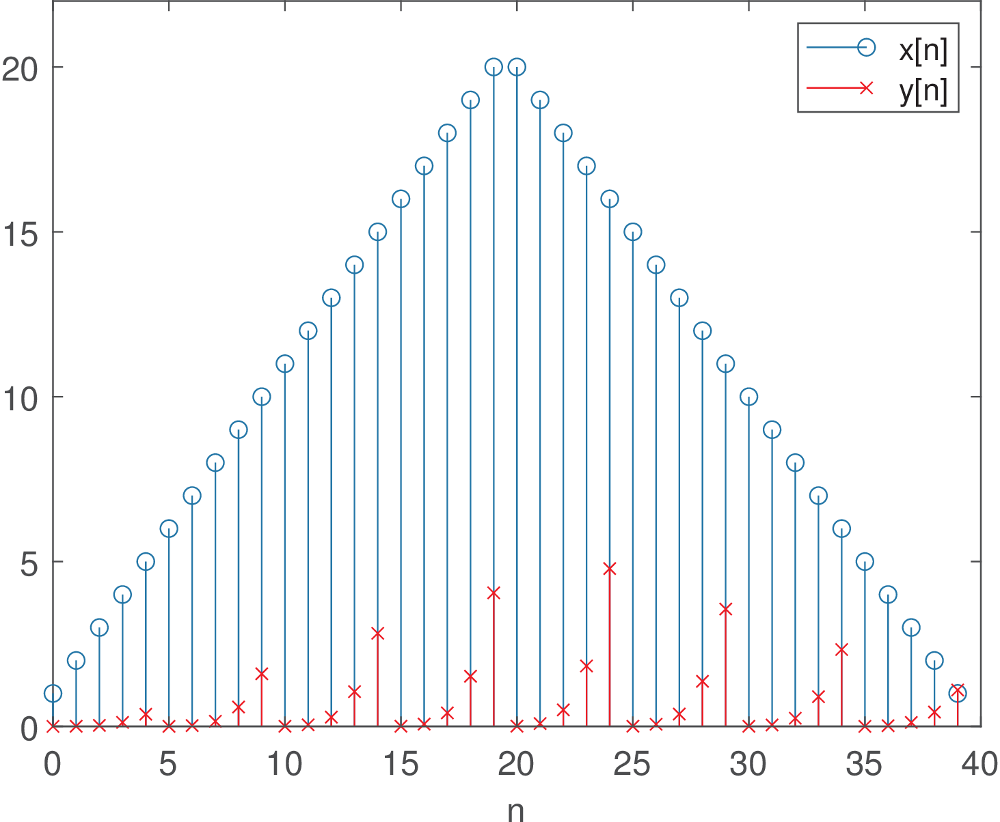
Instead of using y=filter(B,A,x) to completely filter x in one function call, it is useful to know how to segment the input x in blocks of samples and repeatedly invoke filter until filtering all blocks. This is illustrated in Listing 3.49.
x=[1:20,20:-1:1]; %input signal to be filtered, in Volts [B,A]=butter(8,0.3); %IIR filter N=5; %block length numBlocks=floor(length(x)/N); %number of blocks 5Zi=filtic(B,A,0); %initialize the filter memory with zero samples y=zeros(size(x)); %pre-allocate space for the output for i=0:numBlocks-1 startSample = i*N + 1; %begin of current block endSample = startSample+N -1; %end of current block 10 xb=x(startSample:endSample); %extract current block [yb,Zi]=filter(B,A,xb,Zi);%filter and update memory y(startSample:endSample)=yb; %update vector y end
These commands obtain the same results of Figure 3.80 because the filter memory is updated via [yb,Zi]=filter(B,A,xb,Zi). However, a simple modification from this command to yb=filter(B,A,xb), which disregards the filter memory leads to the result in Figure 3.82. In this case, the filter has zeroed memory at the beginning of each block of samples. The strong distortion on in this case indicates that it is crucial to take care of updating the filter memory when dealing with signal processing in blocks.
Application 3.11. Processing sample blocks using convolution in matrix notation.
As Eq. (3.6) indicates, the convolution between two finite-length signals can be represented in matrix notation. However, in many applications, block processing is adopted, where one of the signals has an infinite duration and is segmented into successive blocks of samples, as in Eq. (1.8).
Listing 3.50 illustrates the extra manipulations that are required to use a matrix notation for the convolution of each block and get the correct convolution result.
x=transpose(1:1000); %(eventually long) input signal,as column vector h=ones(3,1); %non-zero samples of finite-length impulse response Nh=length(h); %number of impulse response non-zero samples Nb=5; %block (segment) length 5Nbout = Nb+Nh-1; %number of samples at the output of each block Nx = length(x); %number of input samples hmatrix = convmtx(h,Nb); %impulse resp. in matrix notation beginNdx = 1; %initialize index for first sample of current block y = zeros(Nh+Nx-1,1); %pre-allocate space for convolution output 10for beginNdx=1:Nb:Nx %loop over all blocks endIndex = beginNdx+Nb-1; %current block end index xblock=x(beginNdx:endIndex); %block samples, as column vector yblock = hmatrix * xblock; %perform convolution for this block y(beginNdx:beginNdx+Nbout-1) = y(beginNdx:beginNdx+Nbout-1) + ... 15 yblock; %add parcial result end plot(y-conv(x,h)) %compare the error with result from conv
The basic idea is that the end samples (“tails”) of the partial convolution results need to be properly added to the final result. In the example of Listing 3.50, the impulse response has Nh=3 non-zero samples and the block length is Nb=5. The convolution matrix hmatrix has
dimension and each partial convolution result corresponds to Nbout=7 samples. For instance, the last two samples of yblock of the first block need to be added to the first two samples of yblock obtained of the second block, and so on. This is similar to the overlap-add method illustrated in Listing 3.9 but without the FFT-based processing.Application 3.12. Power and energy at the output of a LTI system. In many applications it is important to estimate the power at the output of a system. The following result is valid for LTI systems.
Theorem 3. Power at the output of a discrete-time LTI system.
|
|
(3.97) |
where is the empirical (time-averaged) autocorrelation and is the energy of . If and , then .
Proof sketch: Assume a short impulse response with . Take three consecutive output values starting at an arbitrary time instant, such as , for example. These values will be , and . Calculating
the energy for these three samples is enough to provide insight on the solution:Taking all samples in account and using expectation, one can obtain a relation between the output and input energies and , respectively:
or, alternatively
given that .
If the input does not have correlation among its samples, then it is a “white” signal (see Section 1.12.1.0) with for , such that
|
|
(3.98) |
For example, assume that , such that and . Assuming the input is AWGN with power , then Eq. (3.98) leads to . The following code illustrates this fact:
N=1000000; x=randn(1,N); h=[1 -0.5]; y=filter(h,1,x); Eh=sum(h.^2), Px=mean(x.^2), Py=mean(y.^2)
However, if is not white, will impact the result.
For the same filter, if , then and , such that . As a third example, consider the samples of a binary are i.i.d with equiprobable 0 and 1 values. In this case, and , such that . The following commandsN=1000000;x=round(rand(1,N));h=[1 -0.5];y=filter(h,1,x); Eh=sum(h.^2), Px=mean(x.^2), Py=mean(y.^2)
can confirm the results.
Application 3.13. The delay and attenuation imposed by a channel. Here the LTI system is assumed to be a communication channel. When the channel has a flat magnitude and a linear phase (or, equivalently, a constant group delay) over the bandwidth of the transmitted signal, the received signal is a delayed version of the transmitted signal. In this special case, the delay can be described by a single value. In general however, each frequency component is delayed by a different amount and this relation is described by the group delay function in Eq. (3.46).
As discussed, roughly, the group delay is the time between the channel’s initial response and its peak response or, in other words, the group delay of a filter is a measure of the average delay of the filter as a function of frequency. Hence, for an arbitrary (non-constant) group delay, distinct frequency components of the transmitted signal get delayed by different delays, the signal gets distorted and there is not a single delay value to characterize the transmission. In practical communication systems, an estimator keeps tracking at the receiver of the best time instant to compensate the delay provoked by the channel. And in simulations, it is common to resort to a brute force approach, where this “optimum” delay compensation instant is searched by trying distinct values in a range and choosing the one that minimizes a figure of merit such as the bit error rate.
When the channel simulation requires filtering to shape the magnitude of the signal spectra but allows linear phase, it is convenient to use FIR filters with linear phase because the delay they impose is well-defined as indicated in Figure 3.49. Hence, in many cases the LTI channel is assumed to be causal and represented by a finite-length impulse response with non-zero values. The integer is the channel order because in the Z-domain, . Assuming a linear phase FIR of -th order, where is even (or equivalently, the filter has an odd number of coefficients), the delay is simply
.Recall that, for FIR filters, the impulse response coincides with the filter coefficients. Adopting vectors, the impulse response can be represented by h=[h0 h1 … hL] and the command y=filter(h,1,x) used because the numerator and denominator of are h and , respectively.
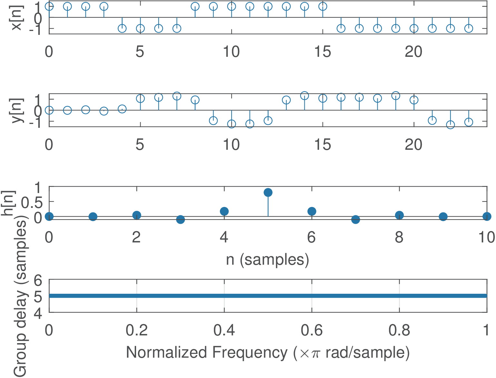
For example, consider the linear phase channel obtained with h=fir1(10,0.8). Figure 3.83 depicts its impulse response, group delay and the output for an input representing symbols with an oversampling of samples per symbol and a shaping pulse with four samples equal to 1.
Figure 3.83 allows to observe that the input gets delayed by the group delay of h, which in this case is 5. Note that the input peak at x[0] corresponds to the output sample y[5]. This simple signal delay happens because because h in this example was chosen to be symmetric and have a linear phase, such that the group delay is 5 samples for all frequencies as indicated in Figure 3.83. In terms of seconds, a group delay of 5 samples corresponds to , where is given in Hz. In this case, the first 5 samples of the output should be eliminated for aligning with . For example, the commands y(1:5)=[], x(end-4:end)=[] could be used to align the corresponding vectors and keep them with the same number of samples.
However, in a more general scenario, the group delay varies with frequency, such as for the non-symmetric FIR filter illustrated in Figure 3.50.
Typically a channel attenuates the input signal and decreases its power. When the channel is LTI, the output power is related to the input power as informed by Theorem 3 (page §).
When comparing the input and output waveforms, it is useful to know the ratio and multiply by in order to compare signals with equivalent amplitude ranges. However, in practice, it is hard to determine and typically an adaptive automatic gain control (AGC) is employed.
Another example of compensating the delay and gain imposed by a channel is discussed in the sequel.
If useful, one can mimic a perfect automatic gain control (AGC) and force the output to have the same power as the input with the following commands Px=mean(x.^2), Py=mean(y.^2), y = sqrt(Px/Py)*y.
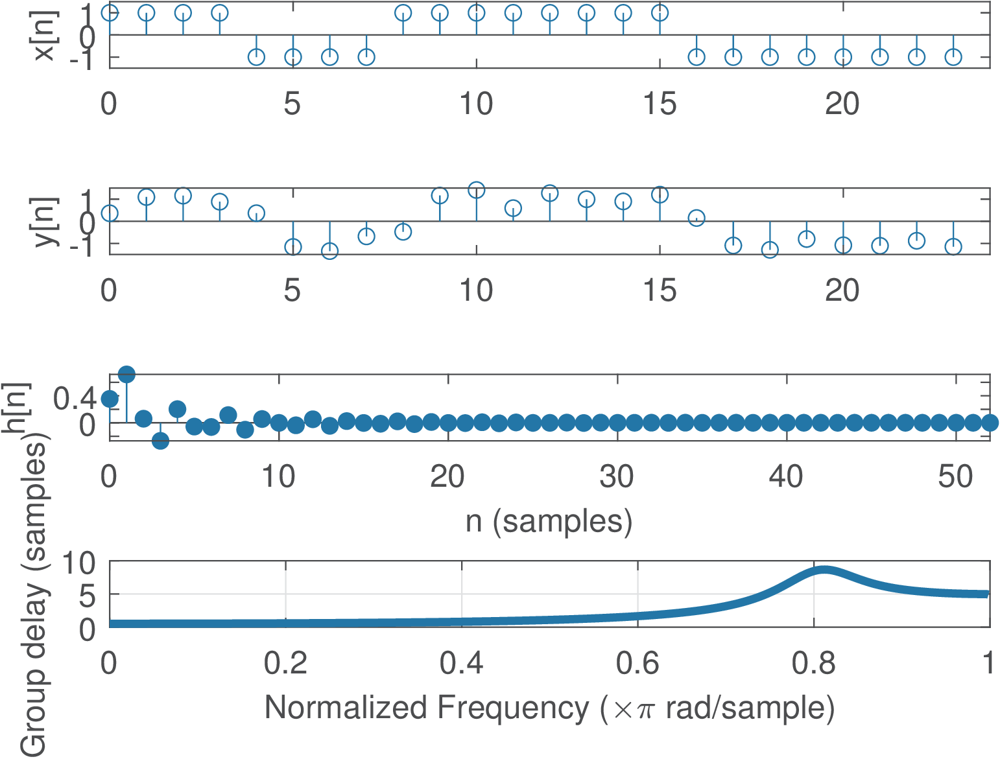
Similar to the procedure for generating Figure 3.83, an IIR filter was simulated to obtain Figure 3.84. In this case the group delay is less than 1 for frequencies and the peak of is for . Observing the graphs of and , a good alignment would be obtained by shifting one sample to the left, i. e., if manipulating algebraically or y(1)=[] if using Matlab/Octave.
35 The reciprocal of a complex number is .